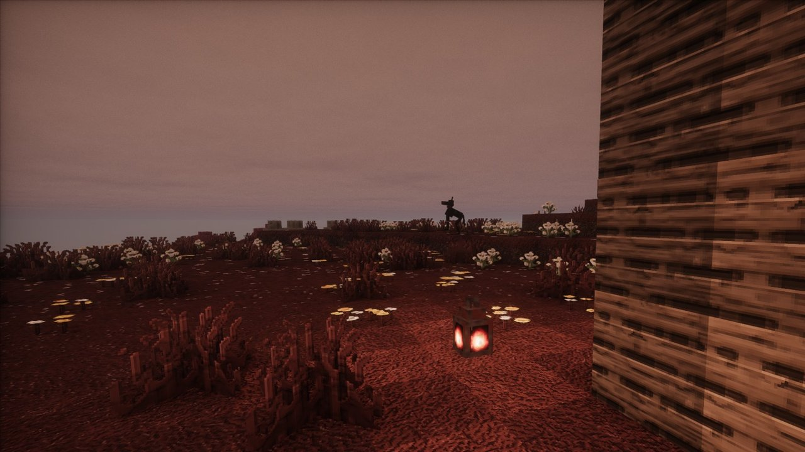

- Since
- 1.62.0 (five places); 1.66.0 to 1.66.3 (twenty-three more); 1.66.7 (in whole stretches)
- Where
- Big stretches of the Overworld, under it, the Nether and the End, among the game's biomes and Biomes O' Plenty's
- Places
- Eighteen on the Overworld's surface, three under the ground, four in the Nether, three in the End
- And under the sea
- Oceans about 2,000 blocks deep, in three depths (new worlds only)
- Old worlds
- Land you've already been through stays as it was. New ground in an old world is laid out the new way, so there'll be a seam where they meet; a new world has it all the new way.
The land itself
Static Hollow has its own country: places of its own, each with its own ground, trees, plants and stone, its own sky, fog and water, its own sounds and its own lullaby. Each one takes the place of one of the game's biomes, the other side of a kind of place you know, as the Moor is to the plains. Their terrain is the game's own, in the same climate. Everything that hunts the Hollow hunts there too. They sit alongside Biomes O' Plenty, which is in the modpack since 1.62.0 (with TerraBlender and GlitchCore), and Static Hollow's structures, fog and music are made to fit Biomes O' Plenty's biomes too.

How it comes: in whole stretches
Up to 1.66.6 the Hollow's places were laid down on one side of the world's "weirdness", a noise that turns over every hundred blocks or so, so each came in strips and scraps, cut off short where it turned. Since 1.66.7 the Hollow has its own country: big stretches of the world, hundreds of blocks to over a thousand across (its rises and hollows some 600 to 1,500 blocks across), each world's own. Inside them, every one of the game's biomes the Hollow has its own for is the Hollow's, all of each one; outside them the world is the game's (and Biomes O' Plenty's). It's the same in the Nether, and in the End, where one of its three takes a whole stretch of islands rather than a different one on each island's top, slopes and edges.

The big things only go down where all of one stands in its own biome, none half in the next one over: the ribcages, the radio masts, the frozen figures, the stone faces, the scarecrows, the crop rings, the grave rows, the choir, the heart, the gallows, the husks, the dead stars and the rest.
Lighter places
In 1.66.4 the twenty-three places from 1.66.0 to 1.66.3 were thinned to about half as much decoration, to go easier on memory: half the trees, plant patches, bones, figures, husks, hearts, furnace stacks, watchers, dead stars and the rest, each kept or dropped on its own so the places stay even. In 1.66.5 the older places had the same: the Antler Woods, the Blightwood, the Hollow Moor, the Weeping Fen, the Signal Flats, the deep water's places (and the abyss under every ocean: its bone heaps, vents, spires and lights) and the deep's caves (the Old Halls, the Root Hollows, the Warm Dark). Their ground, ore veins, fog, light, sounds and music are unchanged. New ground only: chunks you've already explored keep what they have.
The Overworld
| Biome | In place of | Since |
|---|---|---|
| The Hollow Moor | Plains and meadows in a cool band | 1.62.0 |
| The Blightwood | Dark forests | 1.62.0 |
| The Weeping Fen | Swamps | 1.62.0 |
| The Antler Woods | Snowy taiga, the wetter kind | 1.62.0 |
| The Signal Flats | Dry savanna | 1.62.0 |
| The Hanging Wood | Forests, birch forests, old growth birch, dappled forests | 1.66.0 |
| The Bone Dunes | Deserts | 1.66.0 |
| The Rust Mesa | Badlands (all three) | 1.66.0 |
| The Choke Jungle | Jungles (all three) | 1.66.0 |
| The White Silence | Snowy plains, ice spikes | 1.66.0 |
| The Watching Peaks | Frozen and stony peaks | 1.66.0 |
| The Withered Fields | The other plains, sunflower plains | 1.66.1 |
| The Mourning Garden | Flower forests | 1.66.1 |
| The Tall Dark | Taiga, old growth pine and spruce taiga | 1.66.1 |
| The Drowned Roots | Mangrove swamps | 1.66.1 |
| Petal Rot | Cherry groves | 1.66.1 |
| The Pale Caps | Mushroom fields | 1.66.1 |
| The Ashen Shore | Beaches | 1.66.1 |
Each has its own lullaby. The first five's are Hollow Fields, Under the Boughs, Still Water, Pine Needles and Dry Bones; the further the story has got, the more often the chapter's own music plays instead (see the soundtrack). With Serene Seasons, the fog also changes colour with the season.
The Hollow Moor
Open, misty heath under a grey-blue mist: dead heather, peat, old graves under the turf (grave soil), mossy boulders, fallen deadwood, and here and there a gallows-tree of deadwood with chains hanging from it. On the ground you find grave candles, cairn stones and bone piles. White ash drifts in the air. Wind crosses the moor, and a far bell tolls. (The plains and meadows outside its cool band are the Withered Fields' or the game's.)
The Blightwood
Sick trees with grey-violet leaves, in a close fog the colour of a bruise: Blightwood, some of them great and dark-oak shaped, with Hanging Rot dripping from their leaves and shelf fungus on them. Huge brown mushrooms grow among them, and Rotgrass underneath. Rot caps and bone piles lie on the ground, and spores and carrion flies drift in the air. The wood creaks, and something breathes in the trees.
The Weeping Fen
Drowned Fen Willows trail Willow Strands into black water, over peat and mud and sparse rotgrass, a green murk coming off the water. Lights drift over it (lantern motes), carrion flies with them. You find ritual offerings, rot caps and cairn stones. Frogs and the bogged live here. Water laps, and someone weeps, far off.
The Antler Woods
Bone-white Bonewood trees with dark red Bonewood Needles in a pale, cold fog, some of them tall spires, and antler-snags of fallen deadwood among them, with a little dead heather. Bone piles and cairn stones lie about and bone ash drifts in the air. Wolves and foxes live here. Wind whistles through bone, and something bellows, far off.
The Signal Flats
Dead grey flats under a flat grey haze: Wire Grass, gravel, snags of deadwood, and outcrops of Static Stone, which hums. Bone piles and cairn stones lie about, and sparks of static and white ash drift on the wind. Static on the wind, and tones through the static.
The Hanging Wood
Pale birches and Hangwood under a pale haze, and from their boughs Nooses, Straw Effigies and Bone Chimes that clink in the wind. Ghostfern grows under them. A rope creaks under weight; bones clatter on strings.
The Bone Dunes
Drifts of Bone Sand, bleached bushes, Finger Cactus (a hand of a cactus: it pricks), and whole ribcages of things half out of the sand with a skull at the end. Bones shift under the sand; wind moans through bone.
The Rust Mesa
Blood-red cliffs with rust in the bands of the rock, Rust Silt, Rust Thorn (it cuts), and dust the colour of it in the air. Dead radio masts stand on it, some snapped, their lamps still blinking red. A voice in the static; metal groans.
The Choke Jungle
Every tree being strangled: red Throttle Vine up the trunks, Choke Vine hanging down from the leaves, and Meat Flowers that draw flies, in a close green fog. Vines tighten; something wet moves.
The White Silence
No wind and almost no sound. Rime Stalks, spikes of ice, and Haunted Ice with something in it (a hand, a face, someone a long way down). People stand frozen where they stood, two blocks high: Frozen Figures. Someone breathes out; ice cracks.
The Watching Peaks
Faces carved in the cliffs, nine stones each (Cliff Face), eyes open, mouths open; at night something glints in the eyes. Watching Stones sit on the rock, one eye each. The mountain rumbles; stone grinds.
The Withered Fields
Dead fields: Blighted Wheat with black in its ears, and Withered Sunflowers that turn their heads to follow you while you're near. Scarecrows stand in them, a stitched sack for a head, and it turns too. Now and then a ring is flattened into the crops with a sunflower in the middle of it. Something moves in the wheat; crows call.
The Mourning Garden
Dark Yews over rows of old graves: Headstones, their mounds, Black Roses and Mourning Lilies left on them, a candle or two still burning, and Weeping Bells. Funeral bells toll on their own in the dark. Someone weeps.
The Tall Dark
Nightspruce so tall and close it's dusk at noon. Someone has cut eyes into the trunks at head height; Dead Lanterns hang guttering from the branches; Gloomcaps glow faintly underneath. Something walks; something knocks.
The Drowned Roots
Grey Drowned Mangroves trailing vines, Root Hands reaching up out of the shallows and the mud, and Bloated Lilies with gas bubbling up round them. Something breathes under the water.
Petal Rot
The blossom rotting on the trees (Rotblossom), brown-pink petals on the ground, flies, and Flesh Blossoms that bleed. Something wet moves; flies buzz.
The Pale Caps
Pale Mycelium, giant pale mushrooms, Pale Caps, and Puffballs: walk into one and it bursts in your face (sick and blind for a moment). Unlike the game's mushroom fields, monsters walk here. Something breathes; spores burst.
The Ashen Shore
Grey Ash Sand, Driftwood, Ash Grass, and the rotting carcasses of huge things the sea gave up: mounds of Rotting Blubber (soft, slow to cross, stinking) with their ribs through them. Something moans out at sea.
Under the ground
The Flesh Throat
In place of the lush caves (1.66.0). The rock is lined with Throat Flesh that slows you, Throat Fangs point up from the floor and down from the roof (falling on one hurts), and Sinew Strands and glowing Gut Pods hang down. It breathes, it has a heart, and now and then it swallows. The cave squelches.
The Echo Hollows
In place of the dripstone caves (1.66.0): Echo Stone and Echo Crystals that give back what was said here, a long time ago. Footsteps echo back; crystals ring.
The Webbed Dark
Its own place (1.66.0), deep under dry land inland. Webs in every corner and Web Mass on the roofs, Silk Cocoons hanging (break one for what it caught), and Egg Sacs: break one and the spiders come out. Spiders and cave spiders spawn there far more. Chittering; legs skitter.
The Nether
Since 1.66.2, four places of the Hollow's in the Nether, each with its own ground, growth and walls, its own fog (closer than the rest of the Nether), particles, sounds and lullaby. Since 1.66.7 each takes the whole of one of the game's own, in the Hollow's country.
| Biome | In place of |
|---|---|
| The Cinder Choir | Soul sand valleys |
| The Bleeding Wastes | Crimson forests |
| The Static Furnace | Basalt deltas |
| The Gallows Grove | Warped forests |
The Cinder Choir
An ash plain, Charstone over it with embers still in its veins (Ember Charstone), Ash Reeds and Smoulder Bushes. Charred Figures stand in curved rows in the ash, all turned to the one in front of them, mouths open and the coal still burning in them. Come near and each hums its own note, so walking among them you hear the chord. The choir sings; embers crackle.
The Bleeding Wastes
Scab under foot, and the netherrack overhead bleeds: it drips. Artery Vines hang from the roof; Vein Roots and Bloodcaps grow, and there are hollows full of blood. Somewhere in it, under its ribs, is a heart in a mound of Heart Muscle, beating: you hear it a long way off, and it beats faster the closer you come.
The Static Furnace
Slag and Clinker, old Cable strung across the caverns and hanging from the roof, furnace stacks with the fire behind a grate at the foot (hot to stand on), Static Vents breathing blue sparks (stand on one and it bites), Wire Tufts and Spark Bulbs. The air hums, and now and then the light dips, as if the power did. Machinery groans; static crackles.
The Gallows Grove
Grave Nylium, black Gallowwood trees with their arms out level, nooses from them, and iron Gibbets on chains (some with bones still in), Rope Grass, Gallows Blooms, and here and there a gallows. A Gallowwood Sprout grows into a gallows tree. Something swings; a rope creaks.
The End
Since 1.66.3, out past the End's middle island, three places of the Hollow's, each with its own ground, growth, light and fog, sounds and lullaby. Each took the place of half of one of the game's own (its highlands, midlands or barrens); since 1.66.7, in the Hollow's country, one of the three takes a whole stretch of islands, highlands, midlands and barrens alike (the middle island and the small islands stay the game's).
The Pale Reaches
Up to 1.66.6, in place of half the highlands. The End gone white as bone: Pale End Stone, Pale Chorus, Pale Moss, Pale Blooms. At the islands' edges stand Pale Watchers, too tall and too thin, looking out at the void. Don't look at one too long: your ears start to ring, and then the light goes out of your eyes.
The Husk Fields
Up to 1.66.6, in place of half the midlands. The shed skins of huge, long, many-legged things lie on the slopes (Husk, Carapace), hollow, torn, split down the back where whatever wore them climbed out; Husk Flakes everywhere. Void Eggs lie about: break them and what's in them comes out, and when you're near, now and then one hatches by itself. Endermites live here. Many legs skitter; something rattles.
The Starless Barrens
Up to 1.66.6, in place of half the barrens. Black ground (Starless Stone), the light low, cracks down into the void with something whispering in them, and Dead Stars lying in their craters, a little light still in them, with Star Ash round them. They go out as you come near, and glow again once you've gone.
The 1.66 blocks are all placeable and in the creative tab, and a few make things: planks from the new logs (crimson planks from gallowwood), dyes from black roses, lilies and pale blooms, tinted glass from ash sand, string from rope grass, chain from cable, glowstone dust from star ash, paper from husk, bone meal from carapace, end stone from starless stone. See the items page.
Small things sharing one space
Since 1.62.0 there are seven sets of little things that share a single block space, one to four of a set in it, each turned to face whoever put it down. Place one on another to add a piece; break it and one piece comes off.
| Set | What's in it | Where you find it |
|---|---|---|
| Grave Candles | Tallow candles, a stub, a skull. Light them, put them out. | The Hollow Moor; the vaults under the cathedral's crypts |
| Bone Pile | A skull, its jaw, bones | The Moor, the Blightwood, the Antler Woods, the Signal Flats; the cathedral's undercroft; the deep ocean floors and the Dead Water's |
| Rot Caps | The Blightwood's fungi. They glow a little, and puff spores. | The Blightwood, the Weeping Fen |
| Hanging Chains | Chains, a hook, a shackle, a weight, hung from a ceiling. They creak. | The cathedral's undercroft and crypt vaults; the rig's dive locker and workshop |
| Rig Clutter | A tin, an oil can, a wrench, bolts | The rig in the Dead Water |
| Cairn Stones | Flat stones stacked by pilgrims, the top one carved. At night something whispers from them. | The Moor, the Fen, the Antler Woods, the Signal Flats; behind the Forsaken Altar's pilgrim stones |
| Ritual Offerings | A bowl of ash, a straw doll, a red candle, dried herbs | The Weeping Fen; at the foot of the Forsaken Altar's pilgrim stones |
The idea of small blocks sharing a space is from Olaf's Relatively Placed Blocks. Nothing of it is used; these are Static Hollow's own.
The deep oceans
In new worlds (made since 1.62.0) the oceans go down. Past the shelf the sea floor falls away to about 2,000 blocks below the waves: a black drop with the ocean monuments standing on its floor and lava glowing at the very bottom. The deep is the game's own terrain, stretched. (The idea is Tectonic's, MIT; nothing of its code is used.) Under an ocean the water is laid out in three depths, each its own place with its own dark, its own sounds and its own life:
| Depth | From | What's there | What lives there |
|---|---|---|---|
| The Sunless Drop | below y -128 | The last of the light goes and the slope falls away into nothing; bone-white snow drifting down through the black | Shroud Rays, Needlemaws, drowned, glow squid |
| The Hadal Dark | below y -700 | Pressure, cold, and things that make their own light | Shroud Rays, Needlemaws, the Static Leviathan, glow squid |
| The Trench | below y -1400 | The floor of the world's sea: vents breathing heat, the bones of very big things, and what made them bones | Needlemaws, the Static Leviathan |
On the deep floors lie heaps of bone, spires of bone and calcite, and vents of basalt and blackstone with crying obsidian in them. Sea pickles glow in the dark and bone piles lie about. All the way down, the deep water groans and something passes in the dark.
- The Shroud Ray leaves you be, until you hit it. Then it wraps you. It drops Shroud Hide.
- The Needlemaw is dark until your light finds it. It lunges, and recoils from the light. It drops Needle Teeth.
- The Static Leviathan is a boss with its own bar. It charges, it swallows you whole, and it sings on the Remote's frequency. It drops its Signal Organ, which mends the Remote in the Dead Water.
More on all three in the bestiary and on the Undertow's page.